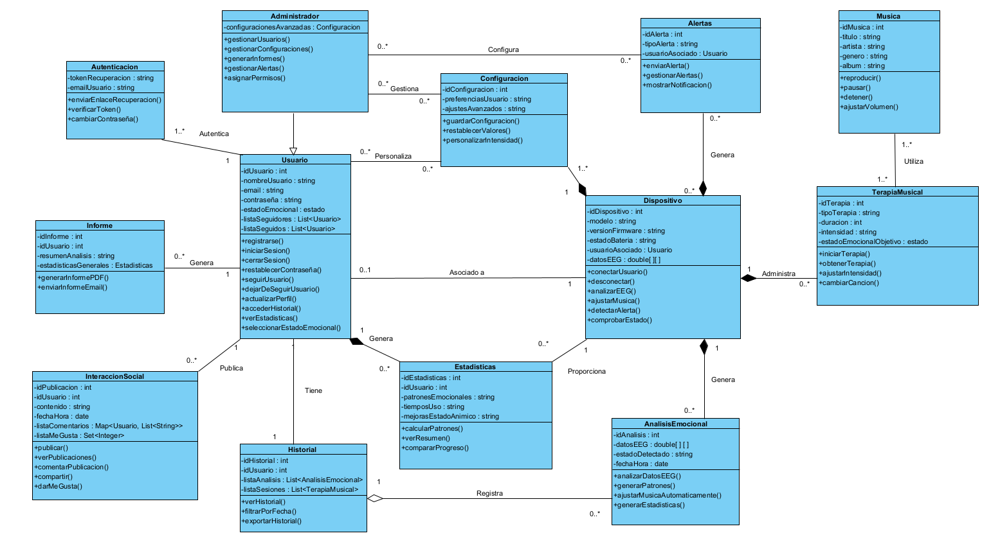

Proyecto de Ingeniería del Software
MindVibe es el concepto de un casco con sensores de electroencefalografía (EEG) que interpreta la actividad cerebral del usuario y adapta en tiempo real la música que escucha, para ayudarle a relajarse, concentrarse o gestionar el estrés.
Estudiantes y profesionales viven con un nivel de exigencia que afecta a su bienestar emocional y a su rendimiento.
Las aplicaciones de música y las listas predefinidas no tienen en cuenta cómo se siente el usuario en cada momento.
Los sensores de EEG son cada vez más baratos, lo que permite llevar esta tecnología a un producto de consumo.
Los sensores EEG registran la señal eléctrica del cerebro y la envían por Bluetooth a la aplicación móvil.
Un modelo de aprendizaje automático interpreta las señales y detecta si el usuario está estresado, relajado o concentrado.
El sistema ajusta la música (por ejemplo, su ritmo) hacia el estado que el usuario ha elegido: relajación, concentración o activación.
El historial muestra la actividad cerebral y los estados emocionales a lo largo del tiempo, y se puede exportar.
El proyecto ha seguido el ciclo completo de Ingeniería del Software: entrevista con el cliente, plan de proyecto con diagrama de Gantt, documento de requisitos (13 requisitos funcionales de usuario y sus requisitos del sistema), modelado con UML, diseño con patrones y un prototipo funcional.

Hemos desarrollado el panel que usaría el administrador para gestionar los usuarios de MindVibe y los cascos asociados a cada uno (requisito RF10). Está hecho con Java, Spring Boot, Thymeleaf y una base de datos H2, con una relación uno a muchos entre usuarios y dispositivos.
Aquí puedes probar una versión de demostración que funciona directamente en el navegador, con los mismos datos y operaciones.
Abrir la demostraciónParte técnica y revisión continua del proyecto.
Búsqueda de información e integración de los contenidos de la asignatura.
Maquetación, bocetos y lluvia de ideas.